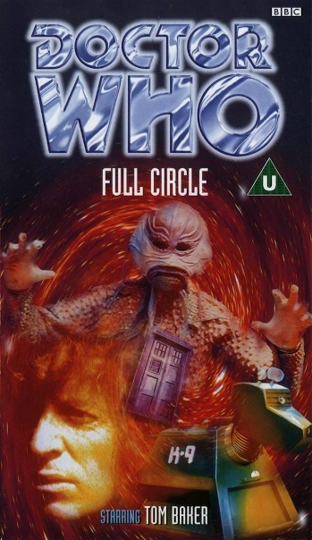

Эра Четвертого Доктора (18 сезон)
<<< НАЗАД ||| 3. Полный цикл ||| ДАЛЬШЕ >>>
Субтитры: Русские и Английские |  |
|---|---|
с фанатским обновлением визуальных эффектов (cunningmunki) Субтитры: Русские и Английские | |
с обновлением визуальных эффектов (cunningmunki) Субтитры: отсутствуют | |
Full Circle
Дата выхода: 25 октября - 15 ноября 1980
Формат: 4 эпизода по 25 мин.
 |  |  помощник |
ТАРДИС проваливается в Э-пространство — Вселенную с отрицательными координатами, параллельную нашей, — и Доктор с Романой оказываются на Алзариусе, планете, чьи обитатели поколения за поколением ждут возвращения из туманного болота предков. Местный отшельник считает, что эволюция идёт по кругу: люди вырождаются в рептилий, а рептилии — снова в людей, и так без конца. Когда звездолёт стартует, все возвращаются к началу цикла. Серия — первая часть Э-пространственной трилогии, связывающей три сюжета 18-го сезона. Здесь же появляется Адрик — мальчишка-алзариусец, который сбегает на ТАРДИС и станет спутником Доктора. Эндрю Смит написал сценарий в шестнадцать лет — самый юный автор за всю историю сериала.
  VHS+Boxset - ноябрь 1997 |   DVD+Boxset - 26 января 2009 |  Blu-ray - 18 марта 2019 * Версия в нашей группе |
|---|


Трейлер: